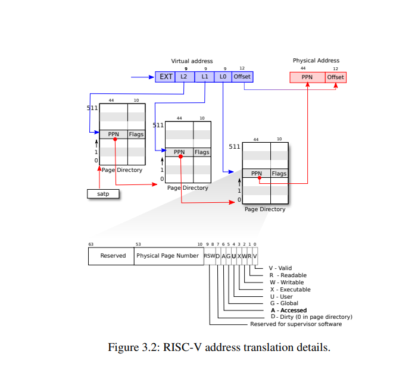
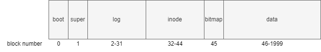

虚拟内存
地址空间
页表介绍
Xv6跑在 Sv39 RISC-V下，该模式下虚拟地址只用到低39位其中前27位作会被解释索引找到物理块号再加上后12位得到物理地址。
（注：这27位会被分为单级和多机索引）

#define PTE_V (1L << 0) // valid
#define PTE_R (1L << 1)
#define PTE_W (1L << 2)
#define PTE_X (1L << 3)
#define PTE_U (1L << 4) // user can access
内核空间
Xv6会为每个进程维护一个页表，内核也有一个页表方便内核以可预测的速度访问物理空间和硬件资源。
相关的数据定义
//where in kernel/riscv.h
#define PGSIZE 4096 // bytes per page
#define PXMASK 0x1FF // 9 bits
#define PGROUNDUP(sz) (((sz)+PGSIZE-1) & ~(PGSIZE-1))
#define PGROUNDDOWN(a) (((a)) & ~(PGSIZE-1))
#define PXSHIFT(level) (PGSHIFT+(9*(level)))
#define PX(level, va) ((((uint64) (va)) >> PXSHIFT(level)) & PXMASK)
#define MAXVA (1L << (9 + 9 + 9 + 12 - 1))
#define PA2PTE(pa) ((((uint64)pa) >> 12) << 10)
#define PTE2PA(pte) (((pte) >> 10) << 12)
地址空间
最重要的函数
//pagetable_t 指向根页表 kernel or process
//找到相应的页表项，没有则分配
// where in kernel/vm.c
walk(pagetable_t pagetable, uint64 va, int alloc)
{
if(va >= MAXVA)
panic("walk");
for(int level = 2; level > 0; level--) {
pte_t *pte = &pagetable[PX(level, va)];
if(*pte & PTE_V) {
pagetable = (pagetable_t)PTE2PA(*pte);
} else {
if(!alloc || (pagetable = (pde_t*)kalloc()) == 0)
return 0;
memset(pagetable, 0, PGSIZE);
*pte = PA2PTE(pagetable) | PTE_V;
}
}
return &pagetable[PX(0, va)];
}
kvminit为内核申请一页的空间，然后调用kvmmap，在即将装载的内核页表上建立一系列的直接映射，包括I/O设备、内核代码和数据、内核空闲内存段等。
```c++
kvminit(void)
{
kernel_pagetable = kvmmake();
}
pagetable_t
kvmmake(void)
{
pagetable_t kpgtbl;
kpgtbl = (pagetable_t) kalloc();
memset(kpgtbl, 0, PGSIZE);
// uart registers
kvmmap(kpgtbl, UART0, UART0, PGSIZE, PTE_R | PTE_W);
// virtio mmio disk interface
kvmmap(kpgtbl, VIRTIO0, VIRTIO0, PGSIZE, PTE_R | PTE_W);
// PLIC
kvmmap(kpgtbl, PLIC, PLIC, 0x400000, PTE_R | PTE_W);
// map kernel text executable and read-only.
kvmmap(kpgtbl, KERNBASE, KERNBASE, (uint64)etext-KERNBASE, PTE_R | PTE_X);
// map kernel data and the physical RAM we'll make use of.
kvmmap(kpgtbl, (uint64)etext, (uint64)etext, PHYSTOP-(uint64)etext, PTE_R | PTE_W);
// map the trampoline for trap entry/exit to
// the highest virtual address in the kernel.
kvmmap(kpgtbl, TRAMPOLINE, (uint64)trampoline, PGSIZE, PTE_R | PTE_X);
// allocate and map a kernel stack for each process.
proc_mapstacks(kpgtbl);
return kpgtbl;
}
void
kvmmap(pagetable_t kpgtbl, uint64 va, uint64 pa, uint64 sz, int perm)
{
if(mappages(kpgtbl, va, sz, pa, perm) != 0)
panic("kvmmap");
}
//为页表建立映射项
int
mappages(pagetable_t pagetable, uint64 va, uint64 size, uint64 pa, int perm)
{
uint64 a, last;
pte_t *pte;
if(size == 0)
panic("mappages: size");
a = PGROUNDDOWN(va);
last = PGROUNDDOWN(va + size - 1);
for(;;){
if((pte = walk(pagetable, a, 1)) == 0)
return -1;
if(*pte & PTE_V)
panic("mappages: remap");
*pte = PA2PTE(pa) | perm | PTE_V;
if(a == last)
break;
a += PGSIZE;
pa += PGSIZE;
}
return 0;
}
在调用kvminit申请初始化空间过后，main调用kvminithart来装载内核页表的根页表地址到satp寄存器中
void
kvminithart()
{
// wait for any previous writes to the page table memory to finish.
sfence_vma();
w_satp(MAKE_SATP(kernel_pagetable));
// flush stale entries from the TLB.
sfence_vma();
}
在内核空间下，main马上就调用procinit，为每个用户进程分配一个内核栈，该内核栈将被映射到内核虚拟地址空间的高地址部分，位于trampoline下方。生成虚拟地址的步长为2页，而且只处理低的那一页，这样高的一页就自动成了保护页（PTE_V无效）。更新了所有内核栈的PTE之后，最后调用kvminithart更新一次satp寄存器，分页硬件就能使用新的页表。
void
procinit(void)
{
struct proc *p;
initlock(&pid_lock, "nextpid");
// 开始时p=proc，即p的地址是proc数组的最开始位置
// 每次遍历p就指向下一个进程结构
for(p = proc; p < &proc[NPROC]; p++) {
initlock(&p->lock, "proc");
// Allocate a page for a kernel stack, for each process
// Map it high in memory at the va generated by KSTACK, followed by an invalid guard page.
char *pa = kalloc();
if(pa == 0)
panic("kalloc");
// 指针相减就是地址相减，获取当前进程p和proc数组最开始位置的偏移量
// 比如第一次，从p-proc=0开始，KSTACK生成虚拟地址: TRAMPOLINE - 2*PGSIZE
// 因此TRAMPOLINE的下面第一页是guard page，第二页是kstack，也就是va指向的位置
// 后面也以此类推，被跳过而未被处理的guard page，PTE_V是无效的
uint64 va = KSTACK((int) (p - proc));
// adds the mapping PTEs to the kernel page table
// 内核栈可读可写，但在用户态不可访问，也不能直接执行
kvmmap(va, (uint64)pa, PGSIZE, PTE_R | PTE_W);
p->kstack = va;
}
// 将更新后的内核页表重新写入到satp中
kvminithart();
}
物理空间分配
内核在运行时会分配和释放很多物理内存，xv6将一部分的物理内存，从kernel data结束开始，到PHYSTOP为止，这一部分称为free memory，用于运行时的内存分配。每次分配和回收都以页为单位，一页大小4KB，通过一个空闲物理帧链表free-list，将空闲的物理帧串起来保存。页表、用户内存、内核栈、管道缓冲区等操作系统组件需要内存时，内核就从free-list上摘下一页或者多页分配给它们；在回收已经分配出去的内存时，这些被回收的物理帧，内核将它们一页页地重新挂到free-list上。
struct run {
struct run *next;
};
struct {
struct spinlock lock;
struct run *freelist;
} kmem;
extern char end[]; // first address after kernel.
// defined by kernel.ld.
//initialize the allocator
void
kinit()
{
// initializes the free list to hold every page between the end of the kernel and PHYSTOP
// xv6 assumes that the machine has 128MB of RAM
initlock(&kmem.lock, "kmem");
// kernel data之后到PHYSTOP之前都可以用于分配
// add memory to the free list via per-page calls to kfree
freerange(end, (void*)PHYSTOP);
}
void
freerange(void *pa_start, void *pa_end)
{
char *p;
p = (char*)PGROUNDUP((uint64)pa_start);
//kfree是头插法
for(; p + PGSIZE <= (char*)pa_end; p += PGSIZE)
kfree(p);
}
void
kfree(void *pa)
{
struct run *r;
if(((uint64)pa % PGSIZE) != 0 || (char*)pa < end || (uint64)pa >= PHYSTOP)
panic("kfree");
// Fill with junk to catch dangling refs.
memset(pa, 1, PGSIZE);
// casts pa to a pointer to struct run, which records the old start of the free list in r->next,
// and sets the free list equal to r
r = (struct run*)pa;
acquire(&kmem.lock);
r->next = kmem.freelist;
kmem.freelist = r;
release(&kmem.lock);
}
void *
kalloc(void)
{
// removes and returns the first element in the free list.
// When a process asks xv6 for more user memory, xv6 first uses kalloc to allocate physical pages.
struct run *r;
acquire(&kmem.lock);
r = kmem.freelist;
if(r)
kmem.freelist = r->next;
release(&kmem.lock);
if(r)
memset((char*)r, 5, PGSIZE); // fill with junk
return (void*)r;
}

- 物理磁盘，可持久化存储文件
- buffer cache，缓存了磁盘中的盘块，避免频繁读取磁盘
- logging，文件系统的持久性
- inode cache，缓存使用到的inode
- file，管理不同类型文件，文件描述符
- syscall，文件系统接口
disk (磁盘)
布局
**sector: **磁盘存取的最小单位。在xv6中为1kb
**block: **文件系统存取的最小单位，为sector的任意整数倍。在xv6中为1kb

- boot block: 启动操作系统的代码
- super block: 描述文件系统信息
- log blocks:
- inode blocks: 存放所有inode
- bitmap block: 记录data block是否空闲
- data blocks: 存储文件和目录的内容
supber block
// kernel/fs.h
struct superblock {
uint magic; // Must be FSMAGIC
uint size; // Size of file system image (blocks)
uint nblocks; // Number of data blocks
uint ninodes; // Number of inodes.
uint nlog; // Number of log blocks
uint logstart; // Block number of first log block
uint inodestart; // Block number of first inode block
uint bmapstart; // Block number of first free map block
};
#define FSSIZE 2000 // size of file system in blocks
#define MAXOPBLOCKS 10 // max # of blocks any FS op writes
#define LOGSIZE (MAXOPBLOCKS*3) // max data blocks in on-disk log
#define NINODES 200
// kernel/fs.c
// there should be one superblock per disk device,
// but we run with only one device
struct superblock sb;
// Init fs
void
fsinit(int dev) {
readsb(dev, &sb);
if(sb.magic != FSMAGIC)
panic("invalid file system");
initlog(dev, &sb);
}
// Read the super block.
static void
readsb(int dev, struct superblock *sb)
{
struct buf *bp;
bp = bread(dev, 1);
memmove(sb, bp->data, sizeof(*sb));
brelse(bp);
}
buffer cache
struct buf
// kernel/buf.h
struct buf {
int valid; // has data been read from disk?
int disk; // does disk "own" buf?
uint dev;
uint blockno;
struct sleeplock lock;
uint refcnt; //
struct buf *prev; // LRU cache list
struct buf *next;
uchar data[BSIZE];
};
bcache
// kernel/bio.c
struct {
struct spinlock lock;
struct buf buf[NBUF];
// Linked list of all buffers, through prev/next.
// Sorted by how recently the buffer was used.
// head.next is most recent, head.prev is least.
// 双向循环链表
struct buf head;
} bcache;
bread()
// kernel/bio.c
struct buf*
bread(uint dev, uint blockno)
{
struct buf *b;
b = bget(dev, blockno);
if(!b->valid) {
virtio_disk_rw(b, 0);
b->valid = 1;
}
return b;
}
bget()
// kernel/bio.c
static struct buf*
bget(uint dev, uint blockno)
{
struct buf *b;
acquire(&bcache.lock);
// Is the block already cached?
for(b = bcache.head.next; b != &bcache.head; b = b->next){
if(b->dev == dev && b->blockno == blockno){
b->refcnt++;
release(&bcache.lock);
acquiresleep(&b->lock);
return b;
}
}
// Not cached.
// Recycle the least recently used (LRU) unused buffer.
// 逆序遍历
for(b = bcache.head.prev; b != &bcache.head; b = b->prev){
if(b->refcnt == 0) {
b->dev = dev;
b->blockno = blockno;
// 还未从磁盘读取数据
b->valid = 0;
b->refcnt = 1;
release(&bcache.lock);
acquiresleep(&b->lock);
return b;
}
}
panic("bget: no buffers");
}
brelese()
// kernel/bio.c
void
brelse(struct buf *b)
{
if(!holdingsleep(&b->lock))
panic("brelse");
releasesleep(&b->lock);
acquire(&bcache.lock);
b->refcnt--;
if (b->refcnt == 0) {
// no one is waiting for it.
// b移动到链表表头
b->next->prev = b->prev;
b->prev->next = b->next;
b->next = bcache.head.next;
b->prev = &bcache.head;
bcache.head.next->prev = b;
bcache.head.next = b;
}
release(&bcache.lock);
}
logging
why
-
case 1
// kernel/sysfile.c static struct inode* create(char *path, short type, short major, short minor) { ... if((ip = ialloc(dp->dev, type)) == 0){ iunlockput(dp); return 0; } <- crashed here, what will happen ... }crash会导致我们会丢失这个inode
-
case 2
在为文件分配block时
- 从 data blocks 中找到一块空闲 block
- 将该 block number 写入到文件的 inode 中
- 在bitmap中标记该block已使用
如果2，3之间 crash 会怎么样
crash 可能会导致这个 block 被分配给多个文件
fatal !
what
buffer cache 之上的一种机制，用来保证系统调用的原子性，同时能够在系统 crash 之后进行 Fast Recovery
how
// kernel/log.c
struct logheader {
int n;
int block[LOGSIZE];
};
struct log {
struct spinlock lock;
int start; // start of log blocks
int size; // number of log blocks
int outstanding; // how many FS sys calls are executing.
int committing; // in commit(), please wait.
int dev;
struct logheader lh;
};
struct log log;

log 实现
-
log write4
当需要更新 inode block 或 bitmap block 或 data block 时，我们并不直接写入到磁盘对应的位置，而是记录一条 log 到磁盘的 log 分区
// kernel/log.c void log_write(struct buf *b) { int i; acquire(&log.lock); if (log.lh.n >= LOGSIZE || log.lh.n >= log.size - 1) panic("too big a transaction"); if (log.outstanding < 1) panic("log_write outside of trans"); // 要写入的 block number 已存在 for (i = 0; i < log.lh.n; i++) { if (log.lh.block[i] == b->blockno) // log absorption break; } log.lh.block[i] = b->blockno; if (i == log.lh.n) { // Add new block to log? bpin(b); log.lh.n++; } // i != log.lh.n // log 已存在并且未 commit，nothing to do release(&log.lock); } -
commit
// kernel/log.c static void commit() { if (log.lh.n > 0) { write_log(); // Write modified blocks from cache to log write_head(); // Write header to disk -- the real commit install_trans(0); // Now install writes to home locations log.lh.n = 0; write_head(); // Erase the transaction from the log } }对单个 disk block 的读写具有原子性
commit 可保证系统调用的原子性
// kernel/log.c static void write_log(void) { int tail; for (tail = 0; tail < log.lh.n; tail++) { struct buf *to = bread(log.dev, log.start+tail+1); // log block struct buf *from = bread(log.dev, log.lh.block[tail]); // cache block // 将 log 中记录的缓冲块号的缓冲块复制到 log 缓冲块 memmove(to->data, from->data, BSIZE); // 将 log 缓冲块写出到磁盘 bwrite(to); // write the log brelse(from); brelse(to); } }// kernel/log.c static void write_head(void) { struct buf *buf = bread(log.dev, log.start); struct logheader *hb = (struct logheader *) (buf->data); int i; // 将内存中的 logheader 复制到 log head 的缓冲块 hb->n = log.lh.n; for (i = 0; i < log.lh.n; i++) { hb->block[i] = log.lh.block[i]; } // 将 log head 的缓冲块写出到磁盘 bwrite(buf); brelse(buf); } -
install trans
// kernel/log.c static void install_trans(int recovering) { int tail; for (tail = 0; tail < log.lh.n; tail++) { struct buf *lbuf = bread(log.dev, log.start+tail+1); // read log block struct buf *dbuf = bread(log.dev, log.lh.block[tail]); // read dst memmove(dbuf->data, lbuf->data, BSIZE); // copy block to dst bwrite(dbuf); // write dst to disk if(recovering == 0) bunpin(dbuf); brelse(lbuf); brelse(dbuf); } } -
clean log
// kernel/log.c static void commit() { ... log.lh.n = 0; write_head(); // Erase the transaction from the log } -
recovery
// kernel/log.c static void recover_from_log(void) { read_head(); install_trans(1); // if committed, copy from log to disk log.lh.n = 0; write_head(); // clear the log }
usage
uint64
sys_open()
{
...
// 合法性检查
begin_op();
...
log_write();
...
log_write();
...
end_op();
...
}
// kernel/log.c
void
begin_op(void)
{
acquire(&log.lock);
while(1){
// 有系统调用正在 commit
if(log.committing){
sleep(&log, &log.lock);
// 可能超出 log 大小限制
} else if(log.lh.n + (log.outstanding+1)*MAXOPBLOCKS > LOGSIZE){
// this op might exhaust log space; wait for commit.
sleep(&log, &log.lock);
} else {
log.outstanding += 1;
release(&log.lock);
break;
}
}
}
// kernel/log.c
void
end_op(void)
{
int do_commit = 0;
acquire(&log.lock);
log.outstanding -= 1;
if(log.committing)
panic("log.committing");
// 所有系统调用都已经 end_op()
if(log.outstanding == 0){
do_commit = 1;
log.committing = 1;
} else {
// begin_op() may be waiting for log space,
// and decrementing log.outstanding has decreased
// the amount of reserved space.
wakeup(&log);
}
release(&log.lock);
// if log.outstanding != 0
// noting to do
if(do_commit){
// call commit w/o holding locks, since not allowed
// to sleep with locks.
commit();
acquire(&log.lock);
log.committing = 0;
wakeup(&log);
release(&log.lock);
}
}
一些结构
// kernle/file.h
// 文件控制块
struct file {
enum { FD_NONE, FD_PIPE, FD_INODE, FD_DEVICE } type;
int ref; // reference count
char readable;
char writable;
struct pipe *pipe; // FD_PIPE
struct inode *ip; // FD_INODE and FD_DEVICE
uint off; // FD_INODE
short major; // FD_DEVICE
};
// kernel/fs.h
// 磁盘索引结点
struct dinode {
short type; // File type
short major; // Major device number (T_DEVICE only)
short minor; // Minor device number (T_DEVICE only)
short nlink; // Number of links to inode in file system
uint size; // Size of file (bytes)
uint addrs[NDIRECT+1]; // Data block addresses
};
#define NDIRECT 12
// kernel/file.h
// 内存索引结点
struct inode {
uint dev; // Device number
uint inum; // Inode number
int ref; // Reference count
struct sleeplock lock; // protects everything below here
int valid; // inode has been read from disk?
short type; // copy of disk inode
short major;
short minor;
short nlink;
uint size;
uint addrs[NDIRECT+1];
};
// kernel/fs.h
// 目录项
struct dirent {
ushort inum;
char name[DIRSIZ];
};
addition
Major number (主设备号)
Traditionally, the major number identifies the driver associated with the device. A major number can also be shared by multiple device drivers.
Minor number (次设备号)
The major number is to identify the corresponding driver. Many devices may use the same major number. So we need to assign the number to each device that is using the same major number.

目录查询

// kernel/fs.c
static struct inode*
namex(char *path, int nameiparent, char *name)
{
struct inode *ip, *next;
if(*path == '/')
ip = iget(ROOTDEV, ROOTINO);
else
ip = idup(myproc()->cwd);
while((path = skipelem(path, name)) != 0){
ilock(ip);
if(ip->type != T_DIR){
iunlockput(ip);
return 0;
}
if(nameiparent && *path == '\0'){
// Stop one level early.
iunlock(ip);
return ip;
}
if((next = dirlookup(ip, name, 0)) == 0){
iunlockput(ip);
return 0;
}
iunlockput(ip);
ip = next;
}
if(nameiparent){
iput(ip);
return 0;
}
return ip;
}
open系统调用
open()
void
ls(char *path)
{
char buf[512], *p;
int fd;
if((fd = open(path, 0)) < 0){
fprintf(2, "ls: cannot open %s\n", path);
return;
}
...
}
int open(const char* file, int omode);
-
file: 文件名，相对路径和绝对路径
-
omode: 打开方式
omode value 描述 O_RDONLY 0 只读 O_WRONLY 1<<0 只写 O_RDWR 1<<1 读写 O_CREATE 1<<9 新建 O_TRUNC 1<<10 删除 -
返回值: 一个整数表示文件描述符，打开失败返回-1
sys_open()
// kernel/sysfile.c
uint64
sys_open(void)
{
char path[MAXPATH];
int fd, omode;
struct file *f;
struct inode *ip;
int n;
// 取参数
argint(1, &omode);
if((n = argstr(0, path, MAXPATH)) < 0)
return -1;
// 表示开始一个事务
begin_op();
if(omode & O_CREATE){
ip = create(path, T_FILE, 0, 0);
if(ip == 0){
end_op();
return -1;
}
}
// 不需要新建
else {
// 获取目标文件的inode
if((ip = namei(path)) == 0){
end_op();
return -1;
}
ilock(ip);
// 目录只能以只读方式打开
if(ip->type == T_DIR && omode != O_RDONLY){
iunlockput(ip);
end_op();
return -1;
}
}
// 设备文件
if(ip->type == T_DEVICE && (ip->major < 0 || ip->major >= NDEV)){
iunlockput(ip);
end_op();
return -1;
}
// 分配文件控制块和文件描述符
if((f = filealloc()) == 0 || (fd = fdalloc(f)) < 0){
if(f)
fileclose(f);
iunlockput(ip);
end_op();
return -1;
}
// 设备文件
if(ip->type == T_DEVICE){
f->type = FD_DEVICE;
f->major = ip->major;
}
// 文件或目录
else {
f->type = FD_INODE;
f->off = 0;
}
f->ip = ip;
// 非只写
f->readable = !(omode & O_WRONLY);
// 只写或可读可写
f->writable = (omode & O_WRONLY) || (omode & O_RDWR);
// 删除文件
if((omode & O_TRUNC) && ip->type == T_FILE){
itrunc(ip);
}
iunlock(ip);
// 结束一个事务
end_op();
// 返回文件描述符
return fd;
}
create()
// kernel/sysfile.c
static struct inode*
create(char *path, short type, short major, short minor)
{
struct inode *ip, *dp;
char name[DIRSIZ];
// struct inode* nameiparent(char *path, char *name)
// 返回path的父目录的inode和目标文件的name
// e.g., path="/etc/apt/config"
// dp = inode("/etc/apt/")
// name = "config"
if((dp = nameiparent(path, name)) == 0)
return 0;
ilock(dp);
// struct inode* dirlookup(struct inode *dp, char *name, uint *poff)
// 查询dp目录下name文件的inode
if((ip = dirlookup(dp, name, 0)) != 0){
iunlockput(dp);
ilock(ip);
if(type == T_FILE && (ip->type == T_FILE || ip->type == T_DEVICE))
return ip;
iunlockput(ip);
return 0;
}
// 若文件不存在
// 分配inode
if((ip = ialloc(dp->dev, type)) == 0){
iunlockput(dp);
return 0;
}
// 设置inode
ilock(ip);
ip->major = major;
ip->minor = minor;
ip->nlink = 1;
// 将ip写入到磁盘
iupdate(ip);
// 目录文件
if(type == T_DIR){ // Create . and .. entries.
// No ip->nlink++ for ".": avoid cyclic ref count.
if(dirlink(ip, ".", ip->inum) < 0 || dirlink(ip, "..", dp->inum) < 0)
goto fail;
}
// 添加目录项
if(dirlink(dp, name, ip->inum) < 0)
goto fail;
if(type == T_DIR){
// now that success is guaranteed:
dp->nlink++; // for ".."
iupdate(dp);
}
iunlockput(dp);
// 未释放ip的锁
return ip;
fail:
// something went wrong. de-allocate ip.
ip->nlink = 0;
iupdate(ip);
iunlockput(ip);
iunlockput(dp);
return 0;
}
file descriptor (文件描述符)
// kernel/sysfile.c
static int
fdalloc(struct file *f)
{
int fd;
struct proc *p = myproc();
// NOFILE: 每个进程最多打开文件数
for(fd = 0; fd < NOFILE; fd++){
if(p->ofile[fd] == 0){
p->ofile[fd] = f;
// 文件描述符即为下标
return fd;
}
}
return -1;
}
struct proc {
...
int pid; // Process ID
struct file *ofile[NOFILE]; // Open files
struct inode *cwd; // Current directory
...
};